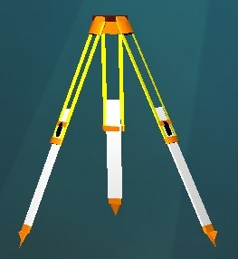
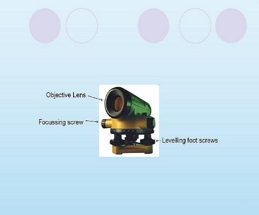
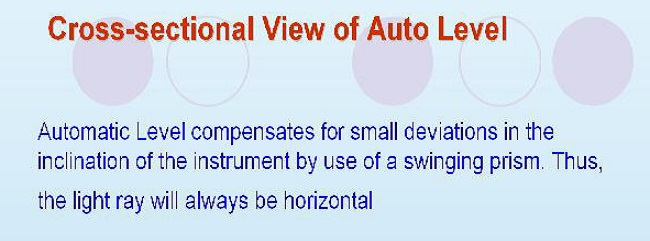
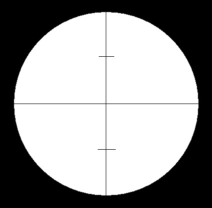

- To study various parts of Auto Level.

1. Tripod : It is used to fix the instrument

2. Auto Level Instrument

3.Various Parts of Auto Level

- Circular Bubble Tube: The bubble in the tube has to be brought in the center to leveling the base of the instrument.
- Eye Piece: It is used to see the leveling staff kept on a ground point.
- Cross-hair Focusing: It is used to focus the cross hair fitted in the Telescopic Tube of the Level near Eye Piece.
- Graduated Horizontal Circle: It is used to measure the Hrizontal Angle of the line of sight.
4. Front Face of Auto Level

- Objective Lens: It is kept towards the object (Leveling Staff) to receive rays into Telescopic Tube.
- Focussing Screw: It is used to focus the Leveling Staff in order to read the graduations.
- Leveling Foot Screws: These are used to make the base of the instrument.
5. Cross- Sectional View of Auto Level


6. Measuring Tape : It is required to measure the height of Level.

7. Benchmark : It is a point on the ground whose elevation above mean sea level is known. It is required to start the leveling work. Normally, first reading is taken on Benchmark with the help of leveling staff known as Backsight reading.

8. Staff : The Graduated Staff is used to determine the elevation of ground point where it is kept.

9. Cross-hairs : These are fine hair in the form of a cross fitted in the Telescopic Tube. The cross-hairs must be focused, first, before focussing the Leveling Staff to take the observations.

10. Cross-Hairs Reading : It is a diaphragm consisting of horizontal hair and vertical hair fitted in the Telescopic Tube of the Level. Staff is bisected at the intersection of the crosshairs to take the reading.